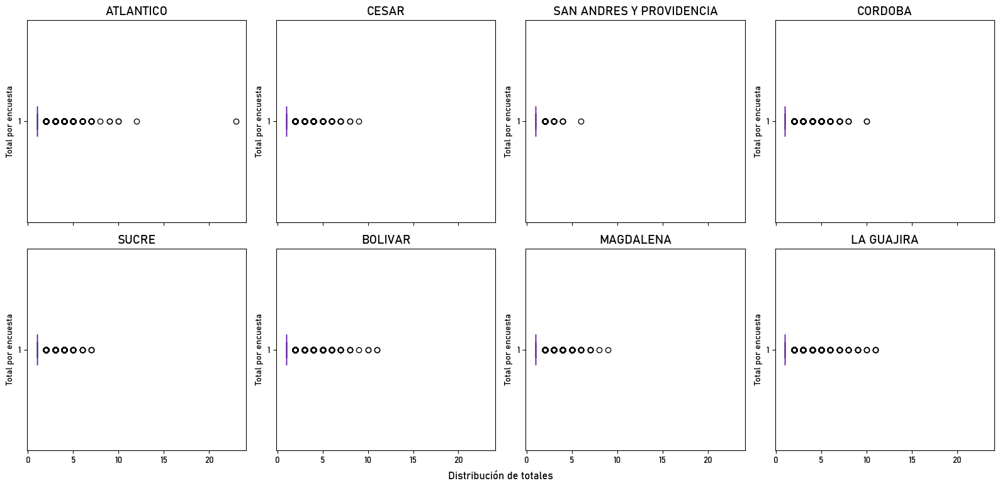
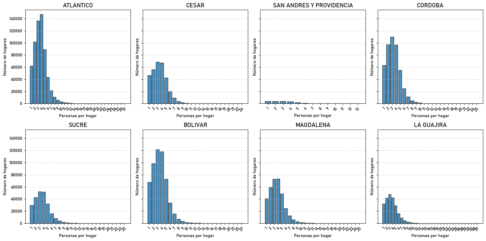
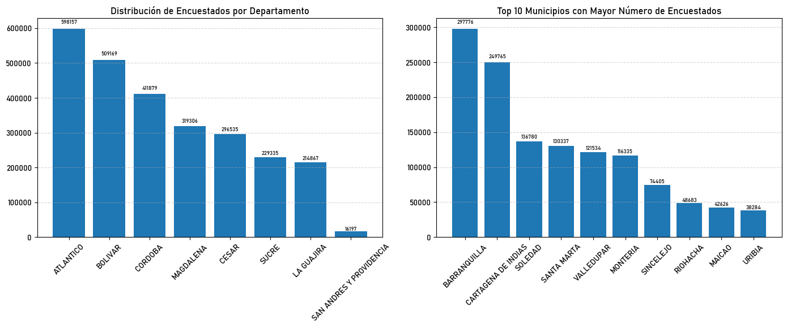

import os
import warnings
import numpy as np
import pandas as pd
import seaborn as sns
import matplotlib.pyplot as plt
warnings.filterwarnings("ignore")
from funciones.faltantes import *
plt.rc('font', family='Bahnschrift')
Primero se leen los diferentes conjuntos de datos.
ruta_base = r'C:\Users\CCOSTA397\OneDrive\Desktop\CIDEACC\convocatoria38\raw_data\data_dane'
df_cargados = []
departamentos = [d for d in os.listdir(ruta_base) if os.path.isdir(os.path.join(ruta_base, d))]
for depto in departamentos:
ruta_depto = os.path.join(ruta_base, depto)
for archivo in os.listdir(ruta_depto):
if archivo.endswith(".CSV"):
try:
tipo = archivo.split("_")[0]
nombre_variable = f"df_{depto}_{tipo}"
ruta_archivo = os.path.join(ruta_depto, archivo)
df = pd.read_csv(ruta_archivo)
globals()[nombre_variable] = df
df_cargados.append(nombre_variable)
except Exception as e:
print(f"Error en {archivo}: {e}")
print(f'Se han cargado {len(df_cargados)} archivos, correspondientes a {len(df_cargados)//4} departamentos')
Se han cargado 32 archivos, correspondientes a 8 departamentos
dflist_personas = {
'ATLANTICO': df_atlantico_personas,
'CESAR': df_cesar_personas,
'SAN ANDRES Y PROVIDENCIA': df_sanandres_personas,
'CORDOBA': df_cordoba_personas,
'SUCRE': df_sucre_personas,
'BOLIVAR': df_bolivar_personas,
'MAGDALENA': df_magdalena_personas,
'LA GUAJIRA': df_guajira_personas,
}
df_atlantico_viviendas = df_atlantico_viviendas.drop_duplicates(subset=['COD_ENCUESTAS'], keep='first')
df_atlantico_geo = df_atlantico_geo.drop_duplicates(subset=['COD_ENCUESTAS'], keep='first')
dflist_viviendas = {
'ATLANTICO': df_atlantico_viviendas,
'CESAR': df_cesar_viviendas,
'SAN ANDRES Y PROVIDENCIA': df_sanandres_viviendas,
'CORDOBA': df_cordoba_viviendas,
'SUCRE': df_sucre_viviendas,
'BOLIVAR': df_bolivar_viviendas,
'MAGDALENA': df_magdalena_viviendas,
'LA GUAJIRA': df_guajira_viviendas,
}
df_atlantico_hogares = df_atlantico_hogares[df_atlantico_hogares['H_NROHOG'] == 1]
df_cesar_hogares = df_cesar_hogares[df_cesar_hogares['H_NROHOG'] == 1]
df_sanandres_hogares = df_sanandres_hogares[df_sanandres_hogares['H_NROHOG'] == 1]
df_cordoba_hogares = df_cordoba_hogares[df_cordoba_hogares['H_NROHOG'] == 1]
df_sucre_hogares = df_sucre_hogares[df_sucre_hogares['H_NROHOG'] == 1]
df_bolivar_hogares = df_bolivar_hogares[df_bolivar_hogares['H_NROHOG'] == 1]
df_magdalena_hogares = df_magdalena_hogares[df_magdalena_hogares['H_NROHOG'] == 1]
df_guajira_hogares = df_guajira_hogares[df_guajira_hogares['H_NROHOG'] == 1]
dflist_hogares = {
'ATLANTICO': df_atlantico_hogares,
'CESAR': df_cesar_hogares,
'SAN ANDRES Y PROVIDENCIA': df_sanandres_hogares,
'CORDOBA': df_cordoba_hogares,
'SUCRE': df_sucre_hogares,
'BOLIVAR': df_bolivar_hogares,
'MAGDALENA': df_magdalena_hogares,
'LA GUAJIRA': df_guajira_hogares,
}
dflist_geo = {
'ATLANTICO': df_atlantico_geo,
'CESAR': df_cesar_geo,
'SAN ANDRES Y PROVIDENCIA': df_sanandres_geo,
'CORDOBA': df_cordoba_geo,
'SUCRE': df_sucre_geo,
'BOLIVAR': df_bolivar_geo,
'MAGDALENA': df_magdalena_geo,
'LA GUAJIRA': df_guajira_geo,
}
Distribución de la cantidad de hogares por vivienda#
stats = []
for departamento, df in dflist_hogares.items():
df_counts = (df.groupby('COD_ENCUESTAS').size().reset_index(name='total'))
desc = df_counts['total'].describe()
stats.append({
'departamento': departamento,
'count': desc['count'],
'mean' : desc['mean'],
'std' : desc['std'],
'min' : desc['min'],
'25%' : desc['25%'],
'50%' : desc['50%'],
'75%' : desc['75%'],
'max' : desc['max']
})
stats_df = pd.DataFrame(stats).set_index('departamento')
stats_df
| count | mean | std | min | 25% | 50% | 75% | max | |
|---|---|---|---|---|---|---|---|---|
| departamento | ||||||||
| ATLANTICO | 598418.0 | 1.045062 | 0.263517 | 1.0 | 1.0 | 1.0 | 1.0 | 23.0 |
| CESAR | 296634.0 | 1.068037 | 0.309186 | 1.0 | 1.0 | 1.0 | 1.0 | 9.0 |
| SAN ANDRES Y PROVIDENCIA | 16210.0 | 1.009685 | 0.121042 | 1.0 | 1.0 | 1.0 | 1.0 | 6.0 |
| CORDOBA | 411996.0 | 1.132856 | 0.427027 | 1.0 | 1.0 | 1.0 | 1.0 | 10.0 |
| SUCRE | 229368.0 | 1.046794 | 0.253492 | 1.0 | 1.0 | 1.0 | 1.0 | 7.0 |
| BOLIVAR | 509390.0 | 1.065814 | 0.312850 | 1.0 | 1.0 | 1.0 | 1.0 | 11.0 |
| MAGDALENA | 319419.0 | 1.076652 | 0.328986 | 1.0 | 1.0 | 1.0 | 1.0 | 9.0 |
| LA GUAJIRA | 214928.0 | 1.058159 | 0.318824 | 1.0 | 1.0 | 1.0 | 1.0 | 11.0 |
def plot_boxplot_grid(data_dict, rows=2, cols=4,figsize=(16, 8),xlabel='Distribución de totales', ylabel='Total por encuesta'):
n = len(data_dict)
fig, axes = plt.subplots(rows, cols, figsize=figsize, sharex=True)
axes_flat = axes.flatten()
# Recorremos cada departamento y su DataFrame
for ax, (dept_name, df) in zip(axes_flat, data_dict.items()):
# Calculamos totales por encuesta
df_counts = (
df.groupby('COD_ENCUESTAS')
.size()
.reset_index(name='total')
)
# Dibujamos el boxplot horizontal
bp = ax.boxplot(
df_counts['total'],
vert=False,
patch_artist=True,
boxprops=dict(facecolor='#7209B7', edgecolor='#640AB2'),
medianprops=dict(color='#560BAD')
)
ax.set_title(dept_name, fontsize=14)
ax.set_ylabel(ylabel, fontsize=10)
ax.set_xlabel('')
# Desactivamos ejes sobrantes si hay menos departamentos que celdas
for ax in axes_flat[n:]:
ax.axis('off')
# Etiqueta común del eje X
fig.text(0.5, 0.04, xlabel, ha='center', fontsize=12)
plt.tight_layout(rect=[0, 0.05, 1, 1])
plt.show()
plot_boxplot_grid(dflist_hogares, rows=2, cols=4, figsize=(16, 8))

Decisión: Escoger solo 1 hogar por cada vivienda. En este caso, el primer hogar por cada vivienda, dado que no todas las viviendas tienen más de un hogar
Distribución de la cantidad de personas por hogares#
summary_list = []
for dept, df in dflist_personas.items():
df_personas = (df.groupby(['COD_ENCUESTAS', 'P_NROHOG']).size().reset_index(name='n_personas'))
desc = df_personas['n_personas'].describe()
summary_list.append({
'Departamento': dept,
'count': int(desc['count']),
'mean': desc['mean'],
'std': desc['std'],
'min': desc['min'],
'25%': desc['25%'],
'50%': desc['50%'],
'75%': desc['75%'],
'max': desc['max']
})
summary_df = pd.DataFrame(summary_list)
summary_df
| Departamento | count | mean | std | min | 25% | 50% | 75% | max | |
|---|---|---|---|---|---|---|---|---|---|
| 0 | ATLANTICO | 625123 | 3.737559 | 1.893930 | 1.0 | 2.0 | 4.0 | 5.0 | 31.0 |
| 1 | CESAR | 316717 | 3.452871 | 1.795731 | 1.0 | 2.0 | 3.0 | 4.0 | 24.0 |
| 2 | SAN ANDRES Y PROVIDENCIA | 16354 | 2.924911 | 1.595179 | 1.0 | 2.0 | 3.0 | 4.0 | 13.0 |
| 3 | CORDOBA | 466615 | 3.326239 | 1.692524 | 1.0 | 2.0 | 3.0 | 4.0 | 25.0 |
| 4 | SUCRE | 240068 | 3.582839 | 1.859756 | 1.0 | 2.0 | 3.0 | 5.0 | 25.0 |
| 5 | BOLIVAR | 542694 | 3.507420 | 1.783587 | 1.0 | 2.0 | 3.0 | 5.0 | 27.0 |
| 6 | MAGDALENA | 343790 | 3.666605 | 1.903838 | 1.0 | 2.0 | 3.0 | 5.0 | 25.0 |
| 7 | LA GUAJIRA | 227367 | 3.599379 | 2.011267 | 1.0 | 2.0 | 3.0 | 5.0 | 39.0 |
rows, cols = 2, 4
fig, axes = plt.subplots(rows, cols, figsize=(16, 8), sharey=True)
axes_flat = axes.flatten()
for ax, (departamento, df) in zip(axes_flat, dflist_personas.items()):
df_personas = (df.groupby(['COD_ENCUESTAS', 'P_NROHOG']).size().reset_index(name='n_personas'))
dist = (df_personas['n_personas'].value_counts().sort_index().reset_index(name='n_hogares').rename(columns={'index': 'n_personas'}))
ax.bar(dist['n_personas'].astype(str),dist['n_hogares'],edgecolor='black',alpha=0.8)
ax.set_title(departamento, fontsize = 14)
ax.set_xlabel('Personas por hogar', fontsize = 10)
ax.set_ylabel('Número de hogares', fontsize = 10)
ax.grid(axis='y', linestyle='--', alpha = 0.6)
ax.tick_params(axis = 'x', rotation = 45)
for ax in axes_flat[len(dflist_personas):]:
ax.axis('off')
plt.tight_layout()
plt.show()

Mini-EDA#
import matplotlib.pyplot as plt
df = data_processed_censo.copy()
dept_counts = df['DEPARTAMENTO'].value_counts()
mun_counts = df['MUNICIPIO'].value_counts().head(10)
def annotate_bars(ax, bars, labels=None):
for i, bar in enumerate(bars):
h = bar.get_height()
text = f"{h}"
if labels is not None:
text += f"\n{labels[i]}"
ax.text(
bar.get_x() + bar.get_width() / 2,
h * 1.02,
text,
ha='center',
va='bottom',
fontsize=7
)
fig, axes = plt.subplots(1, 2, figsize=(14, 5))
bars = axes[0].bar(dept_counts.index, dept_counts.values)
axes[0].tick_params(axis='x', rotation=45)
axes[0].grid(axis='y', linestyle='--', alpha=0.5)
annotate_bars(axes[0], bars)
bars = axes[1].bar(mun_counts.index, mun_counts.values)
axes[1].tick_params(axis='x', rotation=45)
axes[1].grid(axis='y', linestyle='--', alpha=0.5)
annotate_bars(axes[1], bars)
axes[0].set_title('Distribución de Encuestados por Departamento')
axes[1].set_title('Top 10 Municipios con Mayor Número de Encuestados')
plt.tight_layout()
plt.subplots_adjust(bottom=0.15)
plt.show()
